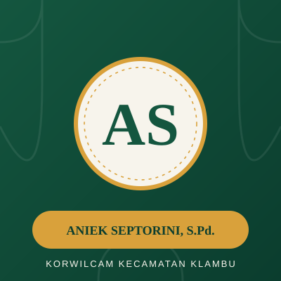

*Gambar placeholder — ganti dengan foto resmi pimpinan.
Aniek Septorini, S.Pd., SD memimpin Korwilcam (Koordinator Wilayah Kecamatan) Dinas Pendidikan Kabupaten Grobogan untuk Kecamatan Klambu, jenjang Sekolah Dasar. Berbekal pengalaman panjang sebagai pendamping satuan pendidikan — antara lain membina SD Negeri 1 Penganten — beliau membawa semangat pendampingan yang kolaboratif bagi 26 SD Negeri di sembilan desa wilayah kerja.
Kepedulian terhadap peningkatan mutu pembelajaran juga diwujudkan lewat karya ilmiah, antara lain “PERMATA-S: Pembelajaran Pecahan Matematika dengan Scratch” yang dipublikasikan di Journal Guru SD (2025) dengan penelitian di SD Negeri 1 Klambu — bukti nyata bahwa pembinaan selalu berpijak pada praktik baik di kelas.
Korwilcam adalah ujung tombak layanan dinas pendidikan di tingkat kecamatan — penghubung, pembina, sekaligus penjamin mutu.
Melaksanakan koordinasi, pembinaan, dan supervisi pendidikan di wilayah kecamatan sebagai perwakilan Dinas Pendidikan Kabupaten Grobogan, serta memimpin tim pendamping satuan pendidikan jenjang SD se-Kecamatan Klambu.
“Terwujudnya satuan pendidikan SD yang berkualitas, berkarakter, dan berdaya saing di Kecamatan Klambu melalui pendampingan yang kolaboratif dan berkelanjutan.”
Skema kerja dari Dinas Pendidikan Kabupaten Grobogan hingga satuan pendidikan.
Sistem Pendidikan Nasional — landasan penyelenggaraan pendidikan dasar.
Pengawas Sekolah — kedudukan, kompetensi, dan tugas pengawas satuan pendidikan.
Pemenuhan beban kerja guru, kepala sekolah, dan pengawas — dasar penilaian kinerja.
Panduan pengawas sekolah sebagai pendamping satuan pendidikan.
Pembentukan dan susunan perangkat daerah — kedudukan kecamatan dan perangkat daerah.
Pembagian tugas pendamping satuan pendidikan (diperbarui berkala, terakhir TMT 1 Maret 2025).
Rujukan umum profil layanan — silakan sesuaikan dengan regulasi terbaru yang berlaku.
Layanan konsultasi sekolah dan guru terbuka setiap hari kerja — jangan ragu menghubungi kami.